/* karl-ohiri - proofs */
12 plates. Deterministic overlays rendered by the composition-analysis skill.
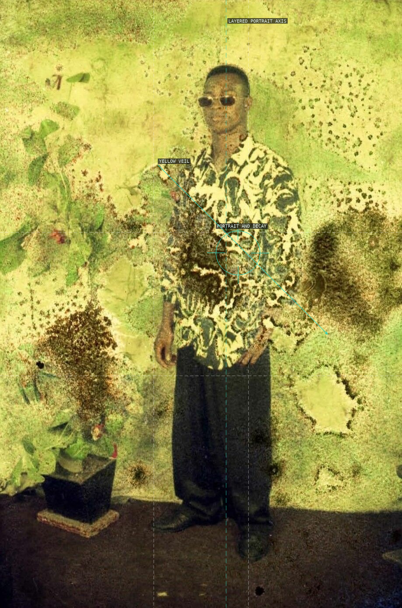
01-archive-of-becoming-moma
A damaged portrait makes the face and yellow chemical veil compete for the center.
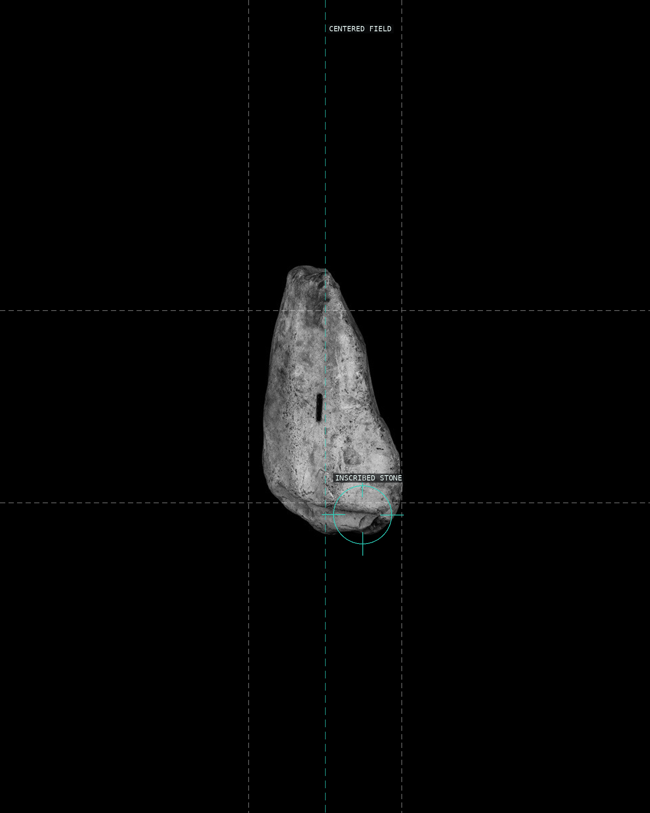
02-equation-i-2020
The small marked stone gains force from a nearly black, symmetrical field.
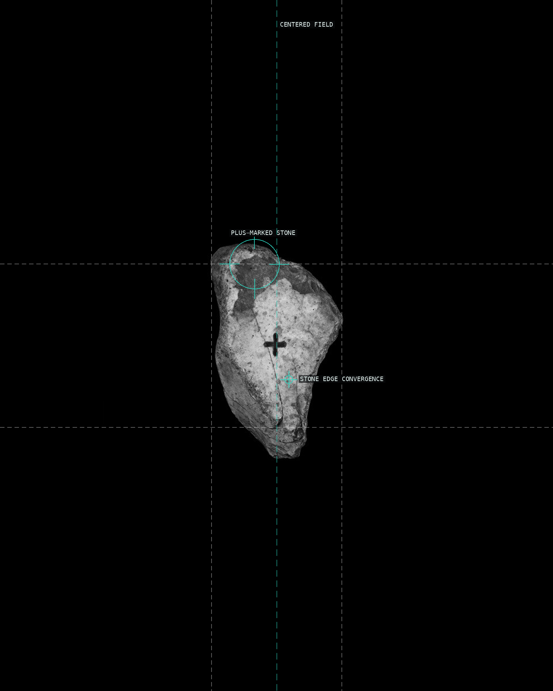
03-equation-plus-2020
A tiny plus is held by central balance and the stone's faint converging edges.
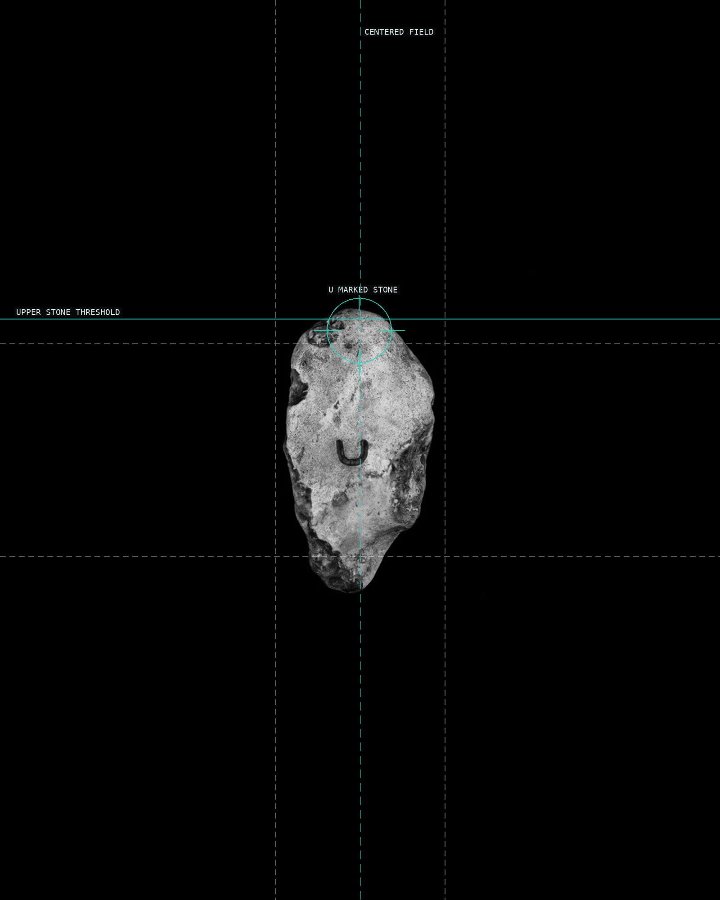
04-equation-u-2020
The stone's quiet central placement lets a single letter read as an address.
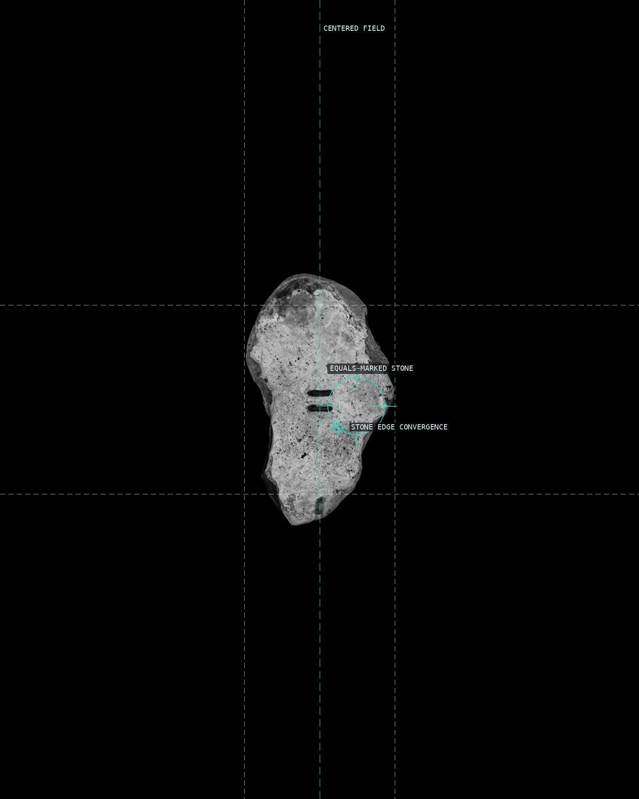
05-equation-equals-2020
Two incised strokes interrupt an otherwise centered, dark field.
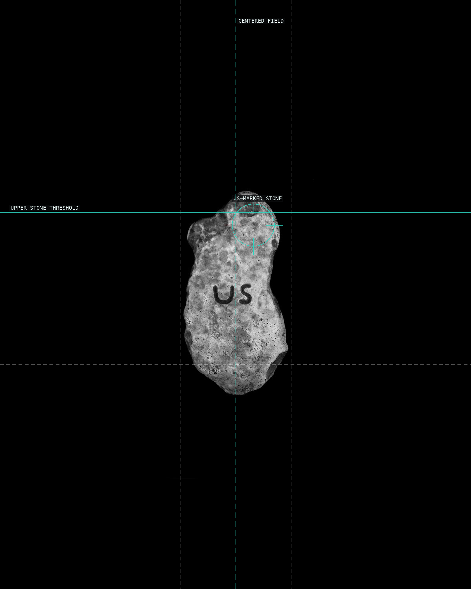
06-equation-us-2020
Joined letters occupy a small, centered object against an expansive field.
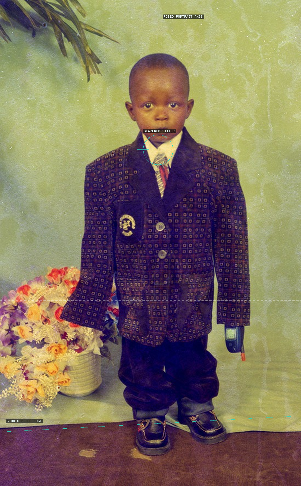
07-blazer-boy-with-phone-c1990s
The upright sitter and phone are stabilized by a near-central studio portrait axis.
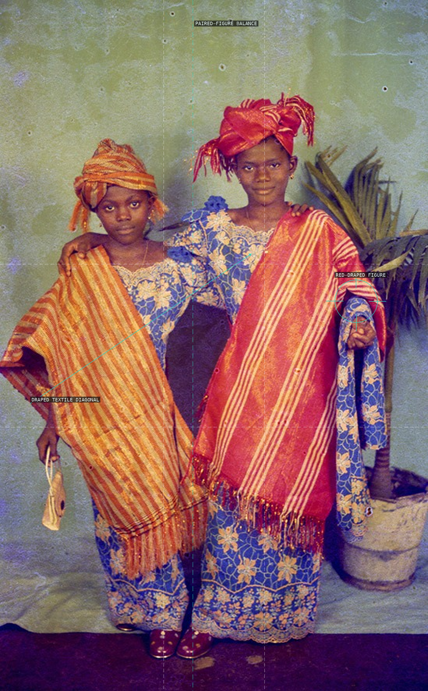
08-two-girls-in-native-c1990s
A close pair forms a balance that the crossing drapery gently unsettles.
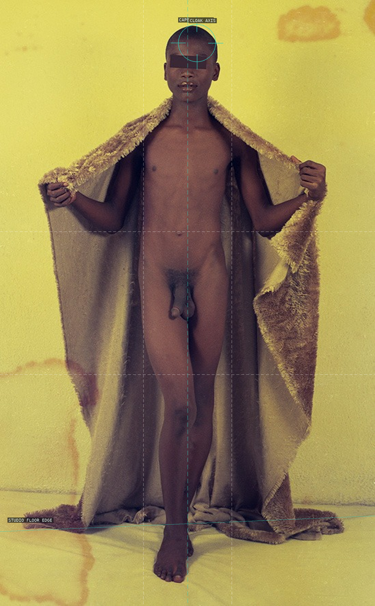
09-cape-c1990s
The cloak spreads from a centered head into a dark, nearly symmetrical silhouette.
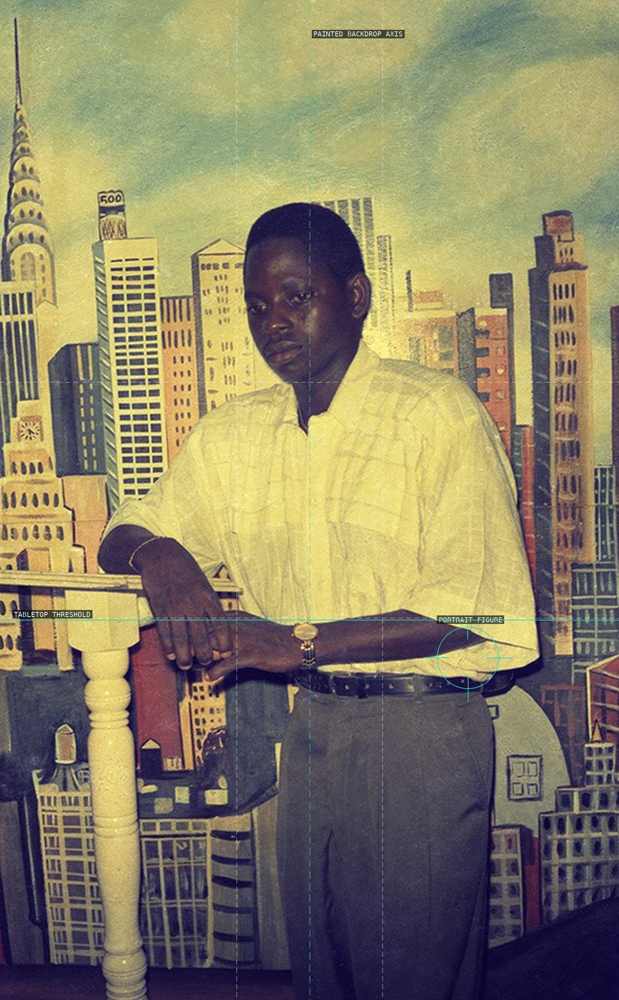
10-new-york-daydream-c1990s
The seated figure is held within a painted urban dream and a studio threshold.
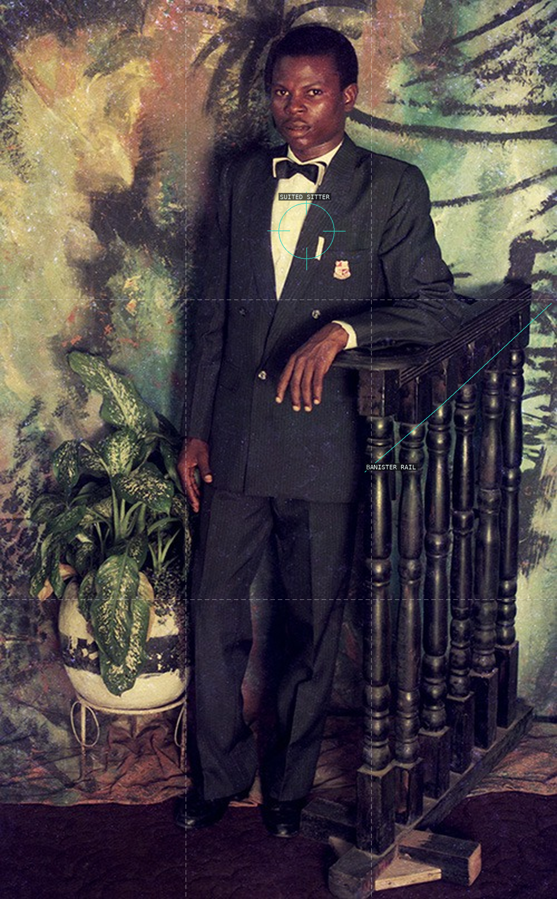
11-suit-and-banister-c1990s
The banister's diagonal rail presses the suited sitter against the studio backdrop.
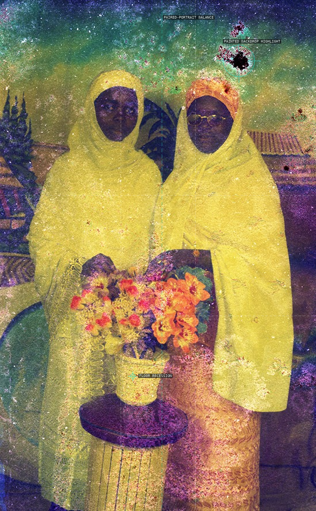
12-untitled-c1990s
A quiet centered stance is held by painted verticals and a receding floor.